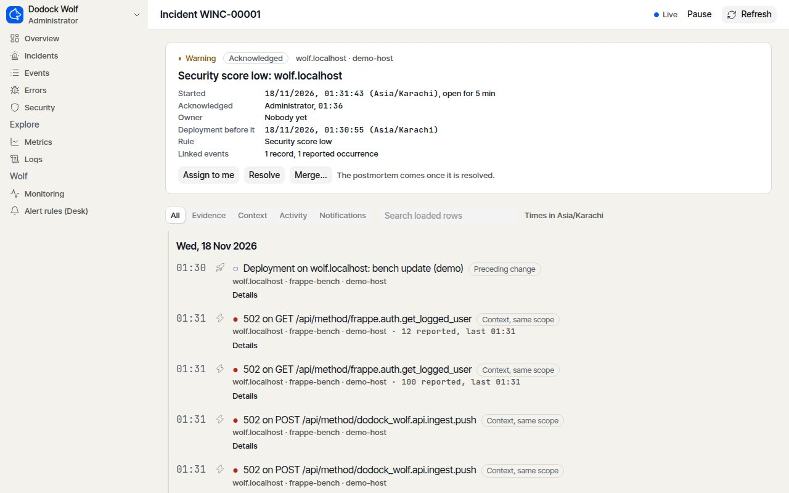
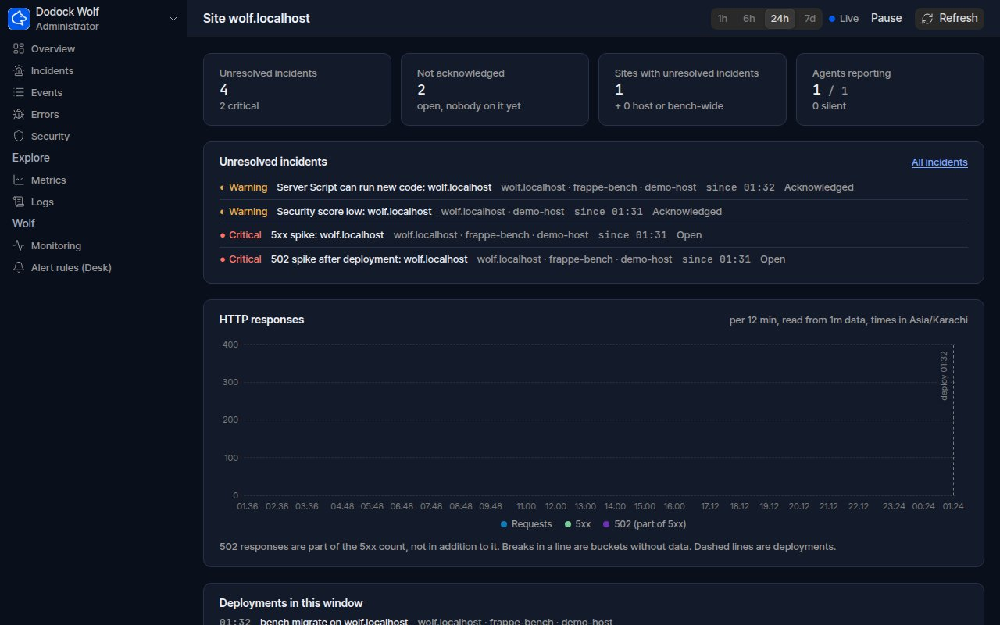
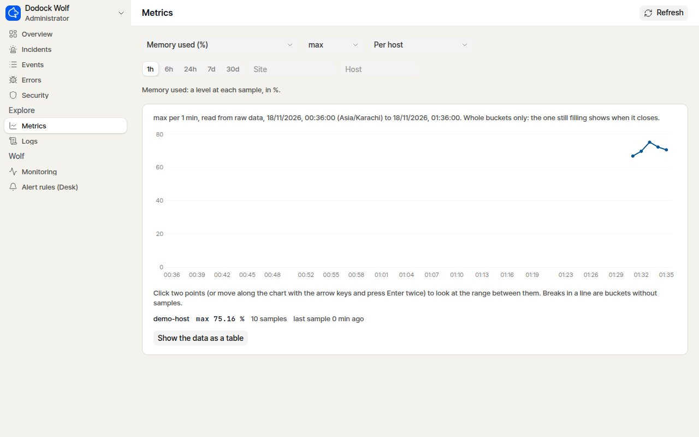
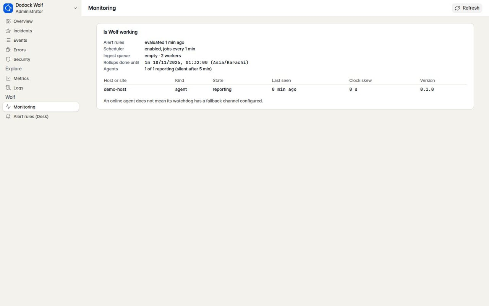
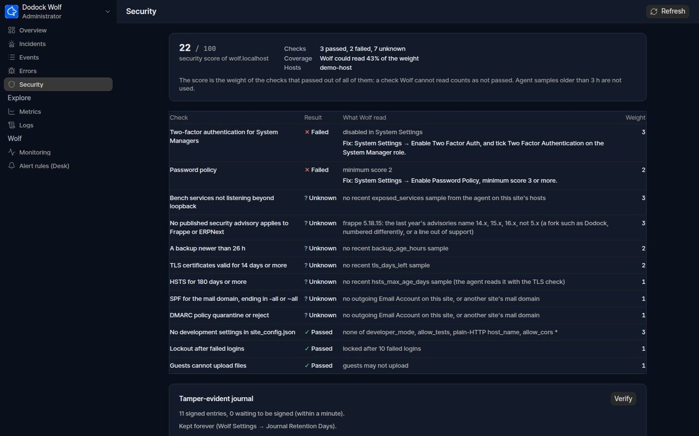

How we shaped Dodock Wolf: observability for Frappe benches, ERPNext and Dokos sites, and the Linux hosts under them. It is owned by the people who run them, not rented from a vendor.
01:47deployment on main · bench update01:48http_502 ×14 · GET /api/method/…01:50incident opened · WINC-0000101:50notified · email + Raven02:00cron_failure · scheduled_job02:00correlated · no second howl· · · no recorded activity · · ·08:55acknowledged
01:47deployment on main · bench update01:48http_502 ×14 · GET /api/method/…01:50incident opened · WINC-0000101:50notified · email + Raven02:00cron_failure · scheduled_job02:00correlated · no second howl· · · no recorded activity · · ·08:55acknowledged
0101 / Le brief
An email from a customer at 9AM is a design failure.
The brief fit on one page, and that was its best quality. Dokos wanted first-class observability for its own stack: Frappe benches, ERPNext sites, Pilot-managed benches, and the Linux hosts that carry them.
It had to use open formats (JSON logs, syslog, OpenTelemetry where useful) and self-hosted storage. It had to be simple enough to adopt in one afternoon. And four signals had to be caught before the customer noticed.
5xx and 502 windowsper site and per bench
Failed cron jobsincluding the 2AM ones
Worker crashes and queue backlogs
Suspicious accessfailed logins, an admin login from an unusual IP, new users with high roles
It also listed non-goals, which most briefs don't
NoDatadog clone
NoLLM observability
NoSLO cathedrals
NoRUM
“The team wakes up with a clear incident timeline, not a surprise email from the customer at 9AM.”
That line from the brief became our acceptance test. Every decision below was checked against it.
0202 / L’idée
A wolf doesn't panic. It listens, then it howls once.
Monitoring brands love the all-seeing eye: the dashboard that sees everything, the watchtower, the radar. We wanted something more animal and less panoptic.
A wolf works the night shift. It hunts in a pack: the agent on the host and the app on the site, two halves of one animal. And it saves its voice for when it matters. That gave us a behavioural brief for the product, not just a logo.
Listen widely.
Tail nginx, Frappe, scheduler, worker and auth logs, and read /proc.
Group before you shout.
Correlate events into one incident per scope.
Howl once.
Notify when an incident opens or reopens, never on every event.
Watchful
Sees the 2AM job
Rules can be scoped to a time window that wraps over midnight, e.g. 01:00–04:00 for nightly cron.
Pack
Agent + App
A stdlib-only Python daemon on the host, a Frappe app on the site, joined by one small HTTPS protocol.
Territory
Your storage
Events, metrics, rules and incidents are plain DocTypes in a database Dokos controls.
0303 / Nom & voix
The brand is the wolf. The product is a tool.
We kept the name the brief already used, Dodock Wolf, and split it in two: Wolf Agent for the host daemon and Wolf App for the Frappe side.
The DocTypes keep sober technical names, like Wolf Event, Wolf Incident and Wolf Alert Rule, because an operator types them into the awesome bar at 2AM. Puns cost seconds.
The voice is the voice of a good on-call colleague. It states facts and leads with scope. It prefers numbers to adjectives and puts the link last. We allow one wolf metaphor per screen, at most. The notification templates in notify.py follow that grammar:
[Wolf] FIRING CRITICAL: 502 spike after deployment: a.example.com
FIRING · critical · 502 spike after deployment: a.example.com
Scope: a.example.com / main / bench-01
Started: 2026-10-29 01:48:00
Details: sum(http_502) = 14 (>= 10) over 5 min
Deployment shortly before: 2026-10-29 01:47:12
https://wolf.example.com/app/wolf-incident/WINC-00001
Illustrative values. The structure (label, severity, title, scope, start, details, deployment, link) is the one render() produces.
0404 / Identité
One line, one eye, one blue.
The mark is the founder's own drawing, and we didn't redraw it. It is a wolf head in profile, traced in a single continuous white line: two pricked ears, the long muzzle, the open jaw. One angular slit makes the eye.
It sits on a rounded square of electric blue, #035AEC. The open jaw does the howling. The narrowed eye does the watching. A good mark already contains the brief.
The official mark on Nuit and on Os, then at 64, 32 and 16px. 16px is the minimum: below that, the eye slit closes.
Clear space
A quarter of the tile
Keep at least 25% of the square's width free on every side. No text, edge or other logo enters it.
Minimum size
24px, 16px for favicons
24px in UI and print equivalents. The 16px favicon is the only exception, and it uses the dedicated asset.
Don't
Leave the wolf alone
Don't recolour the tile or the line. Don't remove the square, outline it, stretch it, rotate it, add a shadow inside it, or put it on a busy photo. Never redraw it as a "simplified" SVG.
Everything else follows from that blue. It is the only saturated colour that is ours. It marks the brand, links and focus, and nothing else. Severity colours sit around it and never compete with it. Neutrals are a cool bone for daytime review and a blue-black Nuit, pulled toward the brand, for the 2AM laptop.
Bleu Wolf#035AEC · white on it 5.7:1 #7FA8FF as text on dark
Nuit#0A0F1C dark bg
Os#F4F2EC light bg
Luneinfo · #BBA6E6 #6B4FA0 on light
Ambrewarning · #F0B04A #8A5200 on light
Braisecritical · #FF7466 #B0281C on light
Mousseresolved · #7CC79E #2E6B4A on light
Why info is moonlight, not blue. The first draft used a steel blue for info. Next to #035AEC, every deployment marker would have looked like a brand element or a link, and a timeline would have read as "Wolf is talking" instead of "this happened". Info is now Lune, a lilac moonlight. It stays cool and calm, it sits below amber and ember in loudness, and it can't be mistaken for something to click. Amber is no longer the eye of the brand. It is only warning.
Severity reads as moon phases
Colour alone fails people with colour blindness, it fails in greyscale, and it fails in a forwarded email. So each severity is also a shape: the moon filling up as the night gets worse.
info · new moonThe wolf hears something. Deployments, context.
The serif belongs to storytelling surfaces like this page. Inside Desk, Wolf respects Frappe's own type and only adds the mono face for timestamps and values, so nothing jumps when you tab between ERPNext and Wolf.
0505 / L’objet
The hero isn't a dashboard. It's the timeline.
Dashboards answer "how are things?". At 9AM, after a bad night, the question is "what happened, in what order, and was it the deployment?".
So the object we designed first is the incident timeline. Every event in the incident's scope, from a little before it started until it was resolved, sits on one vertical rail: mono timestamps on the left, moon glyphs in the gutter, the plain-language title on the right. Below is the demo scenario from the brief, staged with illustrative times.
The night, compressed: three minutes of trouble, seven hours of silence. The silence is the product working, because nobody was woken up twice.
WINC-00001 · ● critical · Acknowledged
502 spike after deployment: a.example.com
site a.example.com · bench main · host bench-01
Deployment on main: bench updatedeployment · manual · wolf-agent mark-deployment
502 on GET /api/method/… ×14error · http_502 · nginx access.log
Incident opened: rule fired, deployment 3 min earlier linkedWolf Alert Rule · require_recent_deployment · sum(http_502) ≥ 10 / 5 min
Notified: email + Raven channelnotify.enqueue → short queue, after commit
Correlated into the open incident: same bench, no second howlattach_to_open_incident · scope site → bench+host → host
seven quiet hours
Acknowledged by the morning team, before the first customer emailstatus Open → Acknowledged
Built, in Desk and in the Wolf UI. The rail stays honest
A preceding change, never a cause.
A deployment before the incident is shown as what came before it. Wolf does not claim it broke anything.
One row, with its count.
A deduplicated event is one row with its count, not one row per repeat. Rows have stable ids and are paged with a cursor, so a page comes back the same whatever its size.
Accepted by the endpoint.
A notification was accepted by the endpoint. That is not someone having read it.
No recorded activity.
A long silence is no recorded activity, never "healthy".
The Wolf UI's rail interleaves four families: linked evidence, context from the same scope, operator activity and notification attempts.
0606 / Architecture de l’info
Five rooms. No maze.
The rooms began inside Frappe Desk, where operators already live and permissions come for free. There were three. The daily views have since moved to the Wolf UI at /wolf (#19), a frappe-ui app on the same session and permissions, and two rooms were added. Desk keeps configuration.
Room 1 · Overview● built
“Is anyone howling?”
Exact counts, never the length of a list. Then the newest unresolved incidents, HTTP responses with deployments marked, and every signal (workers, Redis, database, backups, TLS, host) in one of five states that are never merged: missing, stale, unwatched, within its rules, firing. The same page serves each site, host and bench.
Room 2 · Incident● built
“What happened?”
The timeline above, scope first, with acknowledge, assign and resolve when the server allows them. Merge and split too, once the server has said what would move. Proposed responses wait there for a manager's approval. The postmortem starts there and is written in Desk.
Room 3 · Rules● built, in Desk
“When should it wake me?”
One form that reads like a sentence: when a metric or event, is an operator and threshold, over a window, per a group, between two hours, tell these channels.
Room 4 · Security● built
“How exposed is this site?”
A score out of 100 per site, with every check, what Wolf read and the fix. A check Wolf cannot read is unknown, and says so. The journal's anchor sits below, with a Verify button.
Room 5 · Monitoring● built
“Is Wolf itself awake?”
When the rules were last evaluated, the scheduler's pace, the ingest queue, how far the rollups got, and which agents report, with their clock skew.
Explorers came after the rooms. Events lists deduplicated records with their counts, and Errors groups them by fingerprint. In Metrics, the catalog decides how a metric may be read: a disk level is averaged, a count of 5xx responses is summed, and a sum of disk levels is refused. Every page says what it read: window, resolution, buckets, retention, what was left out. Logs explains why there is no log search yet: Wolf stores parsed events, not raw lines.
The Wolf UI on the demo stack · 4 screens
/wolf/incidents/…

The incident page, light theme.
/wolf/sites/wolf.localhost

A site dashboard, dark theme. Dashed lines are deployments.
/wolf/metrics

The metrics explorer: what it read is stated above the chart.
/wolf/monitoring

Monitoring: is Wolf working. It adds what an online agent does not prove.
The rule form is the IA decision we're proudest of. The brief asked for "when X > Y for Z minutes, send alert", and the DocType is laid out in that order: signal, aggregation, operator, threshold, window, group, timing, channels. "For Z minutes" is not a hidden state machine. It is the min aggregation: if the minimum over the window is above the threshold, the value stayed above it the whole time. The field description says so in one line.
api.ingest.push → Wolf Metric Sample (bulk) + Wolf Event
attack.py → ATT&CK technique ids on security events
entities → one IP, host, site, user across sources
correlation → open Wolf Incident in same scope
rules.evaluate_all: every minute
metric | event · avg min max sum count last
cooldown re-opens · auto-resolve on clear
journal → HMAC chain, signed every minute
on open / reopen / resolve
Channels
Howls
Email (frappe.sendmail)
Webhook, Raven channel
Slack, Mattermost, Matrix
ntfy, Gotify, SMS, PagerDuty
Syslog to a SIEM: OCSF or CEF
The wider pack: read when it is there, never required
Suricata
The agent reads eve.json alerts into network_ids_alert events.
Wazuh
The agent reads the manager's alerts.json, or Wazuh posts its alerts to Wolf.
CrowdSec
Decisions in. Detections and approved blocks out.
Back to the host
A block a manager approved goes out with the agent's next push. The agent applies it and reports the result.
0808 / Le protocole
A protocol is an interface. We designed it like one.
The agent and the app were built at the same time by two different hands. The only thing between them is docs/protocol.md, so we wrote it first and treated it as the brand's most important typographic object: short, unambiguous, readable in one screen.
Timestamps travel as ISO-8601 UTC. The app converts them to the site's system timezone. A 2AM job is 02:00 in Paris on the incident page, not a math exercise.
The secret is shown once.
Registration takes a shared token and returns a 40-character secret that the agent stores with mode 0600. Re-registering rotates it. The endpoint is rate-limited.
Aggregate at the edge.
The agent counts 502s per site per interval and sends a number, not a firehose. Events carry a count and up to three sample lines.
Fail closed, retry open.
A 401/403 stops the agent loudly. A 5xx or network error spools the batch to disk and retries with backoff. A bad night on the Wolf site must not lose the evidence of that night.
Two vocabularies, both small.
Six event types and a dozen metric names. Categories, like http_502, ssh_failed_login or scheduled_job, carry the nuance, so rules can be precise without the schema growing.
0909 / La garde
Nobody else sees the inside of a bench.
Wolf started as observability with a few security signals. On 1 November we compared it with a full SOC platform, SYLink's UniSOC: sixteen modules, from packet capture to phishing drills. Wolf should not try to match that breadth.
A DPI probe or a Windows EDR are separate products, and the operators who run Wolf already buy them, or should. What none of those tools see is the inside of a Frappe bench: DocTypes, roles and DocPerms, API keys, Server Scripts and the System Console, site_config.json, or who exported 40,000 customers from a report. That is Wolf's ground.
What Wolf does not build. It reads them or forwards to them
Nopacket inspection
NoWindows or mobile EDR
Nophishing campaigns
NoAI pentester
No24/7 human SOC
Six steps. Each one ships without the ones after it
Step 1 · Detect● built
Read what is already tailed
Probes, injections and secret files served, from the nginx logs. SSH logins after a brute force, sudo abuse and new accounts, from the auth log. Every security event carries its MITRE ATT&CK technique ids.
Step 2 · Application● built
What only a Frappe app knows
Scripts and console runs. Permission drift, wherever it was made. Weakened System Settings. An API key used from a new network. Exports measured against the user's own largest hour of the last 14 days.
Step 3 · Posture● built
A score Wolf can prove
Out of 100 per site, from twelve weighted checks: 2FA, password policy, exposed bench services, backups, TLS, HSTS, SPF and DMARC, published advisories against the installed versions.
Step 4 · Deception● built
One touch is critical
Decoy users, API keys and paths. Nobody legitimate knows them, so they produce no false positives. Offline IP reputation lists, and CrowdSec as an option. Lookups never leave the site.
Step 5 · Response● built
Proposed, then approved
Block an IP for N hours, disable a user, log out all sessions, revoke API keys. From the incident page or from a signed link in the alert.
Step 6 · Evidence● built
Clocks and a signed journal
NIS2, DORA and GDPR reporting deadlines on the incident, with a report draft. A tamper-evident journal. Everything exported to the organisation's SIEM as syslog, in OCSF or CEF.
/wolf/security

22 / 100 on the demo stack, and the page does not flatter it: seven checks are unknown, and Wolf says it could read 43% of the weight.
Wolf proposes. A human approves.
Nothing runs on its own. Only what Wolf proposed from the incident's own events can be approved, with a second click, and each approval is a read-only row: who, when, what, result. The agent refuses private addresses and durations over a week, whatever the site sends. A signed link in an alert only says what to confirm, so a forwarded email alone cannot act.
Unknown is never safe.
A check Wolf cannot read counts as not passed, and the page says how much of the weight it could read. A major version line that no advisory names is unknown too. So is a listening socket's reach: it is not proof of reachability, since a firewall may block it.
The key is not in the database.
Every minute one job signs the waiting journal entries in order, so two requests can never fork the chain. The key lives in the site config. Someone who can only write the database cannot forge a chain. The SIEM export sends every entry out: an anchor Wolf cannot rewrite.
mac = HMAC-SHA256(key, seq|at|kind|record|digest|prev_mac)
Alone is the baseline.
Suricata and Wazuh do some of what the agent does, and do it better: more rules, more platforms, packets rather than log lines. Wolf reads them when they are there and never depends on them. Tried against Suricata 7 with ET Open, a Wazuh 4.9.2 manager, CrowdSec 1.6.4, and the export against rsyslog, Wazuh and Graylog.
The limits are written down too. Changes made with raw SQL fire no document event and are not seen. Wolf does not decide whether an incident is significant, major or a breach, and sends nothing to an authority. The OCSF mapping is Wolf's reading of the schema, not a certified profile. The full list is in cyber.md.
1010 / La mesure
First we measured. It was 24 seconds.
The load test put 100 hosts and 7 days of data on the demo bench: about 20 million rows. The push held, at 115 ms p95 over HTTP. The Wolf UI's overview did not.
Rows named by random hash scattered a day of rollups over the whole table, the default 128 MB buffer pool held none of it, and MariaDB picked an index that could not use the time range. We wrote that down before fixing anything.
Load test#55 · rows named by random hash
13.8 to 23.8 s
Rows stored in metric order#56 · named by resolution, metric and time
1.5 s
Reads in SQL#57 · name ranges, buckets summed by the database
0.73 smet
The overview's slowest read at 100 hosts × 7 days, on one linear scale. Dashed line: the 1 s target. Source: docs/load-test.md.
In a browser
0.9–1.0s
Median from navigation start until every panel is drawn, in Chromium. 1.0 to 1.3 s at p95.
From the cache
0.53s
A page served from the 30 s cache, p95 0.61 s. The cache is shared, then filtered per caller.
After a quiet spell
0.65s
At most, for pages opened 45 s and 150 s apart, with data 11 to 51 s old.
One query
194 → 0.62s
The signals read, once a window function replaced a lookup per series.
Wrong turns, kept in the log
The table grew by half.
A first try put the whole metric name in the row name. Every index entry repeats the name, and the bench's disk filled. Names now stay 33 characters, as long as the hash they replace.
Taken for an outlier.
Runs on older data had shown the 194 s read once. A full run on fresh data showed it was the rule: MariaDB had turned a join into a lookup per series.
Too good to be true.
The first browser timing measured the wrong site: the demo's nginx serves one site whatever the host name.
The first "cached" run was not.
Dodock's web workers keep the site config for a minute, and still read the cache as off.
A review fix, measured and taken back.
It was meant to keep old-named rows off the primary key. It was slower: 1.15 s against 0.77 s.
1111 / Journal de bord
Build log.
Thursday · 2026
Brief
Brief adopted as-is.
CLAUDE.md becomes the source of truth: MVP goals, non-goals, data model and the 2AM demo scenario.
Protocol
Protocol v1 written before any code.
Registration, push and deployment marker, with event types and metric names, in docs/protocol.md. It is the contract between the two builds running in parallel.
Data model
Seven DocTypes from one spec.
Wolf Settings, Wolf Agent, Wolf Event, Wolf Metric Sample, Wolf Alert Rule, Wolf Alert Channel and Wolf Incident are generated from a single field list, so naming stays consistent. High-volume tables use hash names and indexed scope fields.
Core
Pure logic kept out of Frappe.
schema.py (payload normalisation, UTC→system time) and conditions.py (operators, midnight-wrapping windows, grouping) import nothing from Frappe, so they can be tested without a bench.
Engine
Ingest, rules, incidents, notifications.
Agent registration and push API; a rule engine with metric and event signals, deployment gating, cooldown re-open and auto-resolve; scope-based correlation; email, webhook and Raven delivery.
Agent
Wolf Agent: stdlib-only Python daemon.
Collector, rotation-aware tailer, parsers (nginx, traceback, scheduler, worker, auth), a minimal Redis RESP client and a spooling shipper. Tests, install.sh and a systemd unit ship with it. It reads Pilot's bench.toml defensively when one is present.
The first three rooms of chapter 06, the Dokos preset rules and local signals from the Wolf site itself (failed scheduled jobs, error logs, logins, privileged roles).
Identity
Official logo adopted.
The founder's mark replaces the placeholder drawn for the first draft of this page: a single-line wolf head with an angular eye slit on a #035AEC rounded square. The palette was rebuilt around that blue. Info moved to lilac so it can't read as the brand, and amber now means only warning.
Publishing
Making-of published on GitHub Pages.
This page and its assets/ ship as a static site, with Open Graph image and favicons. Relative paths keep it portable.
Alerting
Alerting that holds up at night.
An agent watchdog alerts through its own channel when the site itself stops working. Alert quality covers flapping, cooldowns and digests. Native channels: Slack, Mattermost, Matrix, ntfy, Gotify, SMS and PagerDuty. The incident workflow adds an assignee, comments, merge and split, postmortems, MTTA and MTTR.
Press & Pilot
Benches found where they live.
Benches are discovered on Press servers and from Pilot's bench.toml. Their deploys and migrations become deployment events.
Privacy
Privacy and access.
PII is scrubbed on the host. Wolf Users get site, bench and host grants. Agent secrets are hashed, pushes are rate-limited, and a clock-skew guard keeps late or early samples in their place.
Signals
The signals operators asked for.
RQ registries, queue Redis, backups, TLS expiry, MariaDB, bench processes, the email queue, and GeoIP for logins.
Friday
Storage
Storage that scales.
Minute and hour rollups with retention per resolution. Reads pick the resolution of their window and stay exact across raw and rolled data. Ingest is async: a queued push that fails is retried and logged, and a backlog shows in Wolf's health.
Wolf UI
A frappe-ui app at /wolf.
The daily views move out of Desk (#19), on the Frappe session, with light and dark themes on the brand tokens. Exact counts use the reader's access rules. Then came the incident page, the overview and the site, host and bench dashboards, and the events, errors and metrics explorers. Every page says what it read.
Sunday
Wolf UI
Live updates, browser and accessibility tests.
Invalidations over Frappe's socket.io, in rooms guarded by the reader's permissions. Every view tested in Chromium with axe, in both themes. Log search waits for raw-line storage.
Demo bench
Checked live, on real data.
The 2AM scenario walked in the Wolf UI only, live updates over the real socket.io server, a scoped user refused an incident outside its scope. Four faults found and fixed, among them an incident linked to a deployment made after it started.
Workflow
Merge and split in the Wolf UI.
The dialogs ask the server what would move (events, comments) and what each incident becomes, before anything does, with the same checks as the actions themselves. A refusal keeps what the reader chose. The postmortem starts from the incident page and is written in Desk.
States
Every state of every view.
A browser test walks each view through loading, empty, filtered-empty, error, forbidden, partial, stale and disconnected, and fails on any "nothing" said while a view reads. It found views that showed nothing while loading, Frappe's raw "Not permitted", and a timeline that said "Nothing recorded" under its own error.
Load test
100 hosts × 7 days, measured.
About 20 M rows on the demo bench. The push holds (p95 115 ms over HTTP). The Wolf UI's overview does not: its inventory and signals take 13 to 24 s. Rows named by random hash scatter a day of rollups over the whole table, the default 128 MB buffer pool holds none of it, and MariaDB picks an index that cannot use the time range.
Row order
Rows stored in metric order.
InnoDB stores rows in name order, so metric rows are now named by resolution, metric and time, and inserted in that order. One more index lets the inventory read the index alone. A first try put the whole metric name in the row name: every index entry repeats it, and the table grew by half. Names now stay as long as the hash they replace. The Wolf UI's overview went from 13 to 24 s down to 1.5 s at the default 128 MB cache. The rest is CPU, not disk.
Reads in SQL
Every overview read under 1 s.
Reads of known metrics scan the primary key by name range, and chart buckets are summed by the database. A full run on fresh data found the signals read at 194 to 233 s: MariaDB turned the join that picks each series' newest value into a lookup per series. A window function reads the rows once: 0.62 s. The slowest Wolf UI read is now 0.73 s at 100 hosts.
Browser
The page, timed in Chromium.
From navigation start until every panel is drawn: 0.9 to 1.0 s at the median, 1.0 to 1.3 s at p95, set by the two slow reads side by side and by drawing 300 signal rows. The first try timed the wrong site: the demo's nginx serves one site whatever the host name.
Cache
A short cache, shared and filtered.
The inventory and signals keep what they read for 30 s, read without access conditions and the same for everyone; each request keeps what its caller may see, and a smoke check proves it with a host-scoped user. A page served from the cache is drawn in 0.53 s, p95 0.61 s.
Security
A security orientation, benchmarked first.
docs/cyber.md compares Wolf with a full SOC platform and sets a roadmap. The first slice needs no new DocType: web attacks read from the nginx logs, host intrusion signals from the auth log, and MITRE ATT&CK technique ids on every security event.
Security
Steps 2 to 6 (#47).
Frappe application signals. A security score per site and bench exposure. Honeytokens and offline IP reputation lists. Human-validated response actions. NIS2 and GDPR deadlines on incidents. A tamper-evident HMAC journal. SIEM export as syslog, with OCSF or CEF.
Monday
Background
The cache read again before it is needed.
A value past its 30 s is still served, up to 2 min, while one job reads it again; every minute the scheduler reads again what was asked for in the last 10 minutes. Pages opened 45 s and 150 s apart were all served from the cache, at most 0.65 s, with data 11 to 51 s old.
First rows
The first rows drawn, the rest on demand.
The overview draws its first signal rows and hosts only. On a load bench, drawing went from 100 to 53 ms cold.
Application
Drift, exports and keys.
Permission drift outside the Role Permission Manager: Custom DocPerm, User Permission, desk access. Unusual data exports per user, against their own largest hour. An API key used from an address outside every network it is known from.
Response
Approval from the alert, as a logged-in manager.
Alerts carry a signed link for each action Wolf proposes. The link only says what to confirm; only a logged-in manager's POST acts. Blocks can go through fail2ban instead of nftables, with a helper that unbans each address on time.
Journal
Retention that still verifies.
A purge first writes and signs a record of where it stopped, then deletes. Verification requires a journal that does not start at entry 1 to start right after that cut. Before retention existed, a journal missing its oldest entries still verified.
Posture
More checks, read from where they live.
HSTS on the TLS check's own connection. SPF and DMARC of the mail domain, from DNS. Frappe and ERPNext versions against GitHub Security Advisories. System Settings of sites other than the Wolf site, read by the agent with the site's own credentials.
Evidence
SIEM export tried on three collectors; DORA clocks.
TLS with a private CA, newline framing and bare messages, tried on rsyslog, Wazuh and Graylog. The NIS2 intermediate report on request, and DORA's major incident deadlines.
CrowdSec
Decisions in, detections and approved blocks out.
Tried against CrowdSec 1.6.4. By default Wolf's detections carry no remediation: CrowdSec records them and decides nothing.
Console
Suricata and Wazuh as optional sources (#72).
The agent reads Suricata's eve.json and the Wazuh manager's alerts.json; without an agent on the manager's host, Wazuh posts its alerts to Wolf. Tried against Suricata 7 with ET Open and a Wazuh 4.9.2 manager. Wolf alone stays the baseline.
Tuesday
Entities
One IP, host, site and user across every source.
At ingest, each security event's IP, hosts, sites and users are normalised and resolved through aliases Wolf learns by itself. A Suricata address on the server becomes the host, a Wazuh agent name resolves to it, and one filter finds Wolf's, Suricata's and Wazuh's events together. Wolf never overwrites a manual alias.
Tuesday
Name
Frappe Wolf becomes Dodock Wolf.
The app, its API paths and this page take the new name. Wolf Agent, Wolf App and the DocTypes keep theirs.
Console
One incident per attacker, across sources (#72).
A security event joins the open incident that names the same public remote IP, whatever its source, host or site. Sequence rules fire when one event follows another on the same IP, user or host: a scan, then a login from that address. A user ties events together only when it is an e-mail address: root on two hosts is not one person.
Console
One story per incident; overlapping detectors.
An incident that took events from other scopes also shows their deployments and health events, so an attack on one host and an outage on another read as one story, for the users allowed to see both. Where Wolf's own detector and Suricata or Wazuh overlap, the operator picks: Wolf's own, both as one finding, or the external one only.
Docs
A documentation site, in English and French.
User documentation in docs-site/, the same page at the same path in both languages. A change users can see updates both in the same pull request.
This page
The making-of, redesigned.
Chapters for security and the load test, and the log grouped by day.
1212 / Partis pris
What we chose not to be.
Python, not Rust, for the agent.
The brief recommends it, and we agree: Frappe contributors can read it on day one. The protocol is generic enough that a Rust agent can replace it later without touching the app.
DocTypes, not ClickHouse.
Storage you already back up, with retention settings to keep it lean. That is the right size for an MVP on Dokos stacks. A columnar store is a later conversation, not a launch requirement.
Thresholds, not anomaly ML.
A rule you can read is a rule you can trust at 2AM. Datadog and SigNoz inspired the shape of alerting, not its opacity.
Desk, not a separate SPA (superseded).
We first gave up some art direction for zero new logins, native permissions and familiar list views. #19 moved the daily views to a frappe-ui app at /wolf that keeps the Frappe session and permissions; Desk keeps configuration.
Honest numbers over pretty ones.
A gap stays a gap, and a missing signal is not a zero. A repeat count is not a count for the window, and a past window is not "stale". A chart that looks calm because it hides what it doesn't know would wake no one at 2AM.
The inside of the bench, not the whole estate.
Wolf covers what a network probe or an EDR cannot know about Frappe, and forwards everything to the organisation's SOC in a standard form.
Approval, not automation.
Wolf proposes a response and a manager approves it. When CrowdSec is asked to decide on detections, that is CrowdSec's choice, and the setting says so.
Next
Standalone parity.
File integrity on the bench and outbound connections of bench processes, for benches without Suricata or Wazuh.
Log search.
Once raw-line storage exists, which Wolf deliberately doesn't have yet.
A real Press server and a real Pilot host.
The integrations still need to run on one.
The overview's first visit at 100 hosts.
A visit the background reads do not cover, the first in 10 quiet minutes, still takes 0.9 to 1.2 s (load test).